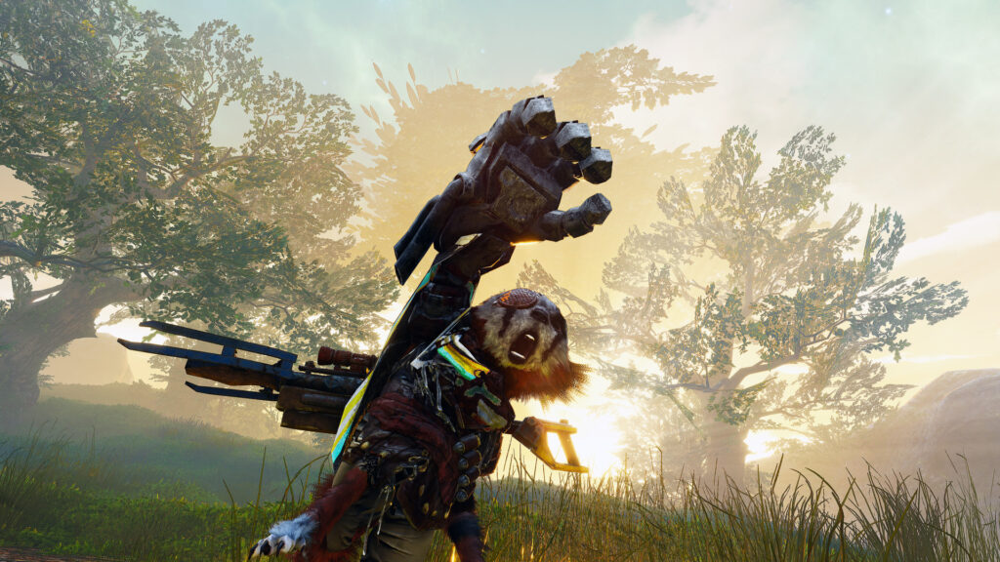

BIOMUTANT NEXT-GEN | REVIEW
Un peludo amigo cuyas decisiones van a condicionar el destino del mundo en next-gen.
Desde el 2017, THQ Nordic junto con Experiment 101 nos han anticipado teasers de Biomutant, un juego en el que interpretaríamos a un pequeño ser peludo quien se aventura en busca de respuestas en un universo completamente hostil. En 2021 finalmente llegó a PS4, Xbox One y PC, y hoy nos sentamos a contarles nuestra experiencia en la edición de actual generación, es decir, en PS5 y Xbox Series.
El objetivo es salvar al mundo- y con él al Life Tree- de una amenaza que ha azotado por completo la vida biológica como se la conocía, produciendo mutaciones por doquier. Se trata de un RPG con amplios componentes de exploración y aspectos sociales. La sociedad está muy dividida en tribus y parte de tus metas será introducirte en ellas y tratar de llegar a una unificación para combatir a los rivales en conjunto.

A medida que avances en la trama y las comunidades vayan concediendote poder, podrás desbloquear mejores armas, equipamiento y habilidades (casi todas orientadas al Kung Fu). No vamos a detenernos demasiado en los detalles básicos, ya que tenemos una review completa al respecto en CDF Gaming, podés ingresar haciendo click aquí.
Un año después del lanzamiento, es válido confirmar que la versión de nueva generación viene con cambios técnicos notables, errores corregidos y ligeras mejoras que en la diaria del videojuego se sienten muy bien:
- Tiempos de carga mucho más veloces
- Soporte HDR
- Tres modos de visualización: 4K nativo con resolución dinámica 30 FPS (Calidad), 1440p a 60 FPS (Rendimiento) y 4K nativo y +60 FPS (Calidad desatada)
Si ya compraste el juego en plataformas anteriores, la actualización es completamente gratuita. Por el contrario, si aún no lo adquiriste, Biomutant es un título que entretiene en muchos aspectos, con algunas pequeñas falencias en el diseño de escenarios, pero con una propuesta que cautiva a todos aquellos que disfrutan de aventuras en tercera persona.